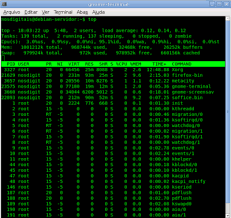

Esta é uma aula que irá tirar seu conforto sobre apenas o básico, se o seu mundo está voltado apenas a uma janela, está aula mostrará um outro sistema operacional tão bom quanto o windows, você terá a oportunidade de trabalhar com exercícios com ele e também aplicações boas para a prática.

Além de conhecer um novo sistema operacional ou vertentes deles, você será ensinado a instala-los e trabalhar de certa forma para que o procedimento de certo, conhecerá o motivo dos antivírus e necessidade dele em certos sistemas.
Você terá exercícios para praticar as ferramentas obtidas pelo sistema e instala-las com os recursos que o Senai proporciona com e sabera como funciona e como poderá seguir quando solicitado.